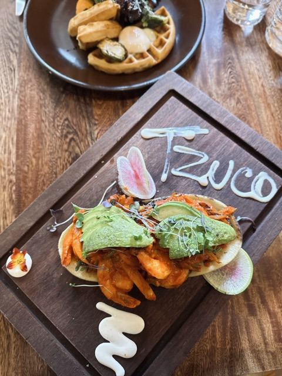
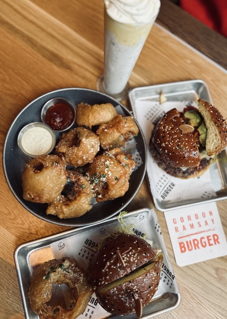
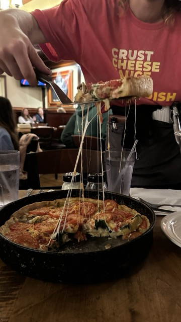
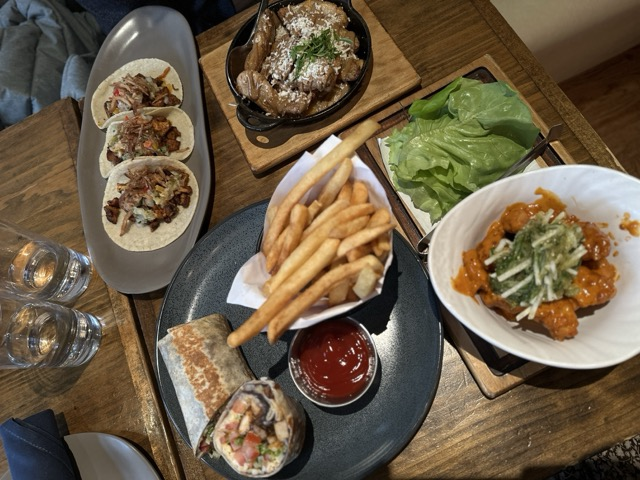
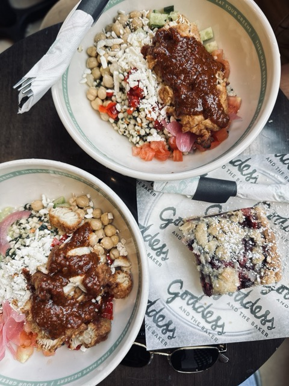

What's so special about them?
I moved to Chicago in 2022. With my grad school starting in summer, I had 2 whole months of just exploring the city and trying out cuisines I had never tried before. As a foodie and a baking enthusiast, I had a LONG list of places I needed to cross off before my schedule was filled up with assignments and lectures. My husband who is (luckily) also a foodie, added many more eateries to my list. By the end of the 2 months, we had explored about 80 restaurants!
Here's a list of my top 5 :
- Tzuco - Mexican
- Gordon Ramsey Burger - American
- Lou Malnati's - Classic Chicago Deep Dish Pizza
- Mercadito - Modern Mexican
- Goddess and the Baker - American breakfast and cafe
Tzuco

Tzuco is an up-scale mexican restuarant in River North neighborhood. I absolutely loved the vibe! The restaurant interiors are beautiful and meticulously designed to incorporate rural mexican elements ina rustic backdrop and floral arrangements. We tried the shrimp tacos in chipotle cherry sauce, chicken & waffles and the shakshuka. We were in love!
Gordon Ramsey Burger

We were so eager to try this one! Gordon Ramsey restuarant is also located in the River North neighborhood. We tried the onion rings, they were awesome! Thick, juicy, crunchy and perfectly seasoned. We also tried the Hell's Kitchen Burger and the Blue Cheese Burger. DELICIOUS! This restaurant has become one of our favorites now
Lou Malnati's

This is easily a Chicago staple for deep dish pizza. There are multiple locations in the city, but we went to the one located on Michigan avenue. It's a great plave to take your friends who're visiting Chicago. We tried "The Lou". I'm personally not a huge fan of deep dish, but it's surely worth trying!
Mercadito

This upscale mexican restaurant is located Downtown, and has a modern yet cozy vide. We tried the cipotle shrimp tempura, truffle fries, and Veggie crunch burrito. I thought i was slightly underwhelming. Would give it a 5/10.
Goddess and the Baker

This chain has several locations in the city, but our favourite one is located on State Street facing the Chicago river! My favourite dish is the Chicaken harissa Bowl. The cous cous base with cucumbers and mint is absolutely refreshing when paired witht eh fried chicken! This place also has a large selection of baery items.